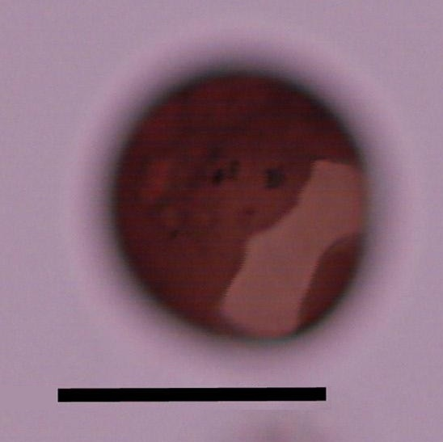
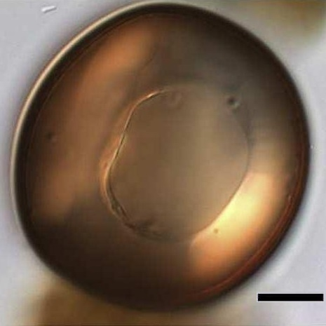
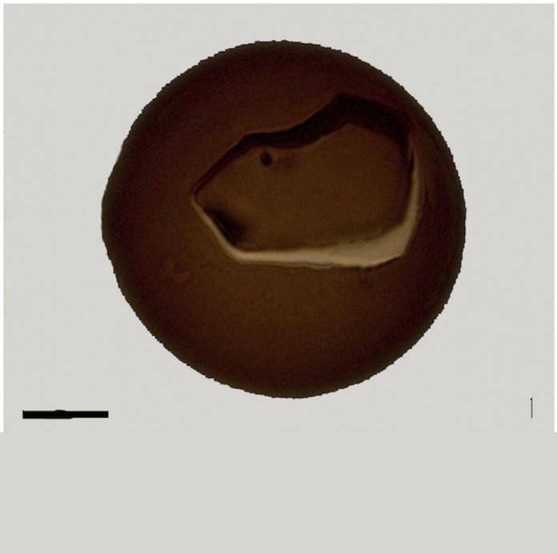
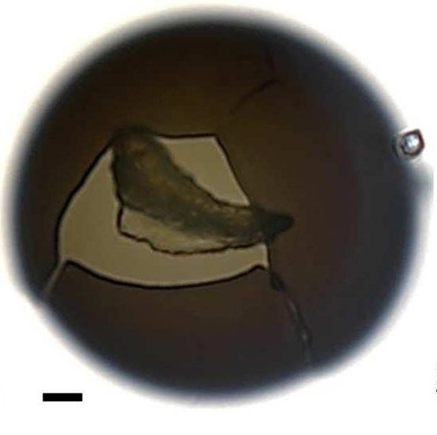
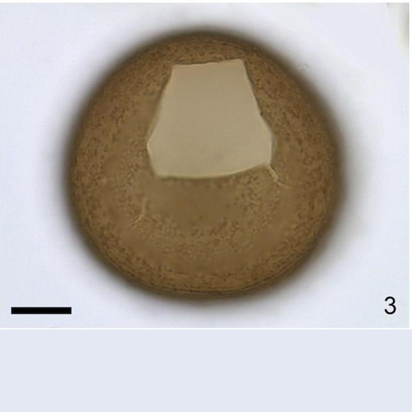
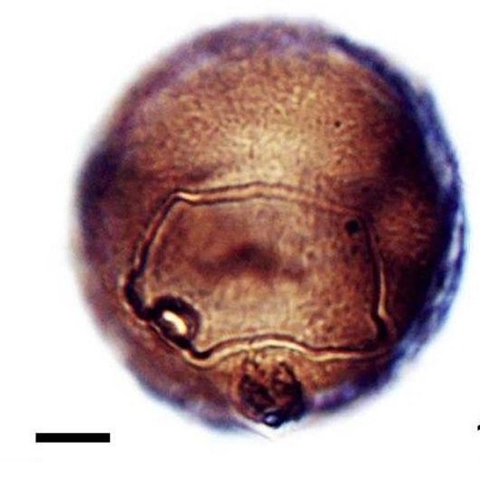
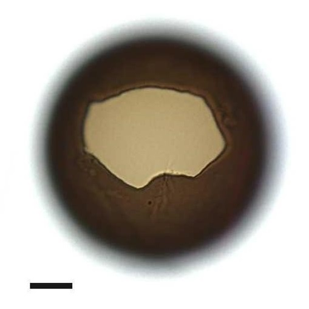
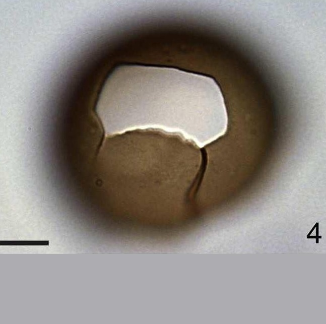
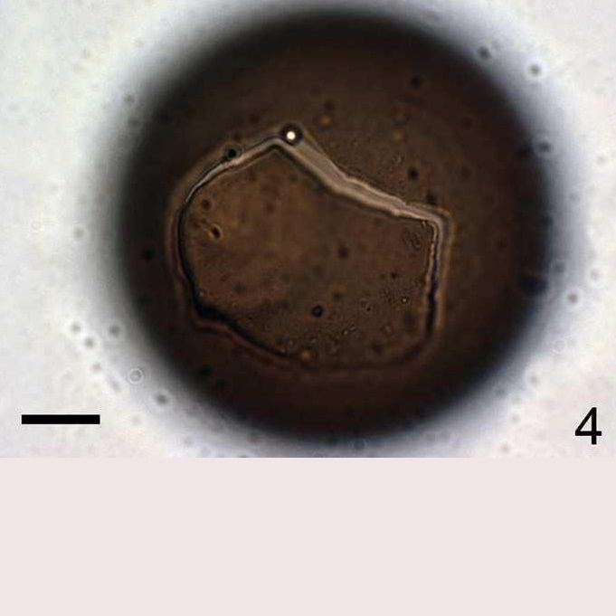
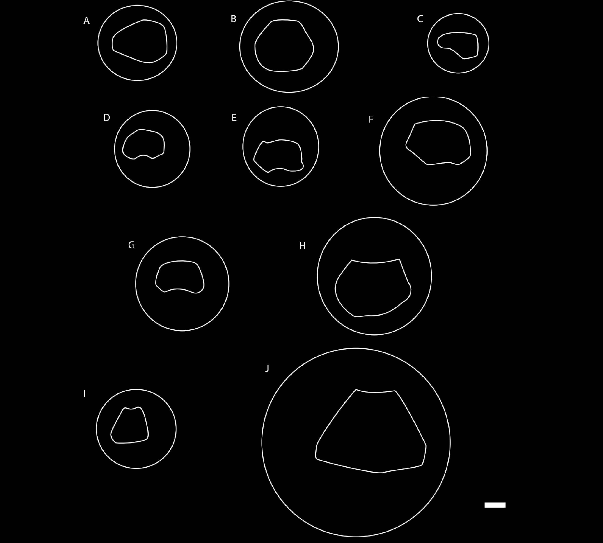

CYSTS LIST
- Alexandrium
- Archaeperidinium/RBSC
- Brigantedinium/Protoperidinium
- Diplopsalopsis/Protoperidinium
- Dubridinium
- Gymnodinium
- Impagidinium
- Lejeunecysta
- Nematosphaeropsis
- Peridinioids
- Polykrikos
- RBSC/Protoperidinium
- Selenopemphix
- Spiniferites
- Stelladinium
- Transparent/Hollow
- Transparent/Solid
- Transparent/Spherical
- Trinovantedinium
- Votadinium
BRIGANTEDINIUM/PROTOPERIDINIUM
Surface |
Shape |
Archeopyle |
Species |
Central body (um.) |
Archeopyle (um.) |
Image |
MicrogranularNot smoothBrown |
Spherical |
IntercalarySaphopylicComprising one long, two intermediate, two short and one convex side |
Brigantedinium assymetricum | 30 to 32.8 (D) |
- |
 |
SmoothThick wallBrown |
Spherical |
SubhexagonalSaphopylicLongest axis up to 3/5(cyst diameter) |
Brigantedinium aureantum | 42 to 58 (L)40 to 63 (W) |
26 to 30 (L)26 to 30 (W) |
 |
SmoothBrown |
Spherical |
IntercalarySaphopylicOne long straight, four short and one curve principal |
Brigantedinium cariacoense | - |
35.8 to 48.5 (D) |
 |
SmoothThick wallBrown |
Spherical |
IntercalarySaphopylicIts anterior suture sub-parallel to its posterior suture which is the longest |
Brigantedinium majusculum | 73 to 92 (D) |
39 (L)23 to 32 (W) |
 |
Brown |
Spherical |
Nearly trapezoidalFour long and two very short archeopyle sutures |
Brigantedinium simplex | 33.5 to 43.5 (D) |
- |
 |
BrownSmooth |
Spherical |
TheropylicHexagonal2a plate |
Diplopsalopsis ovata | 40 to 50 (D) |
- |
|
Dark brownGranulate |
Spherical |
SaphopylicHexagonalAsymmetrical |
cysts of Protoperidinium abei | 50 to 55 (D) |
- |
 |
Dark BrownSmooth |
Spherical |
Saphopylic1st or 2nd intercalary plate |
cysts of Protoperidinium thorianum | 50 to 55 (D) |
- |
 |
Dark BrownSmooth |
Spherical |
SaphopylicHexagonalEquatorially elongate |
cysts of Protoperidinium denticulatum | 56 (D) |
21 x 36 |
 |
Dark brown |
Spherical |
SaphopylicHexagonal2a plate |
cysts of Protoperidinium punctulatum | 52 to 65 (D) |
20 to 30 (D) |
 |

ARCHEOPYLE DIFFERENCES

Schematic drawings of round brown cysts with saphopylic archeopyle, all drawn to scale. A. Cyst of Diplopsalopsis ovata. B. Brigantedinium aureantum. C. Brigantedinium assymetricum. D. Cyst of Protoperidinium avellana (Brigantedinium cariacoense). E. Cyst of Protoperidinium abei var. rotundata. F. Cyst of Protoperidinium thorianum. G. Cyst of Protoperidinium denticulatum. H. Cyst of Protoperidinium punctulatum. I. Brigantedinium simplex. J. Brigantedinium majusculum. Scale bar: 10 um. (Mertens et al., 2019).